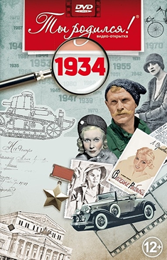
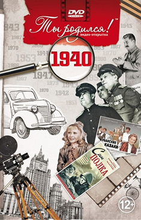
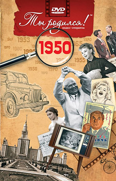
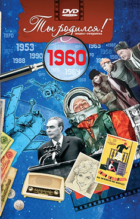
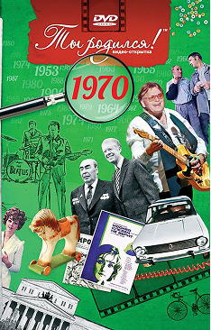
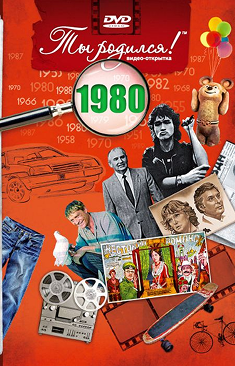
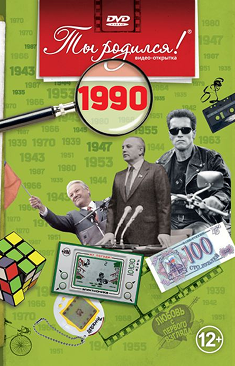

ВИДЕООТКРЫТКА С ФИЛЬМАМИ, 1934–1994 ГГ.

На день рождения близкого человека, друга, коллеги, на юбилей свадьбы или любую другую памятную дату Вы можете подарить оригинальный и необычный подарок! Фильм о любом годе с 1934 по 1994 подарит положительные эмоции, вызовет улыбку и надолго останется в памяти.
Все наши фильмы наполнены добротой и интересными фактами. Они трогают до глубины души и вызывают теплые эмоции! Каждое десятилетие в наших фильмах – особенное! Мы с приятной ностальгией погружаемся в историю. Выбираем важнейшие, ярчайшие моменты прошлых лет – ведь именно они так дороги нам. Это наша память и история.

ВИДЕООТКРЫТКИ О 30-Х ГОДАХ
30-е годы – это время невиданного трудового энтузиазма: первых метростроевцев и стахановцев. Герои страны – летчики, полярники, пограничники, знатные рабочие и колхозники. Неслучайно именно в это десятилетие учреждено звания Героя Советского Союза. На экраны страны выходят «Веселые ребята» и «Чапаев», «Цирк» и «Волга-Волга», а настоящим символом отечественного кино становится Любовь Орлова – единственная и неподражаемая. Впервые проведены чемпионаты СССР по футболу и хоккею с мячом. Валерий Чкалов совершает беспосадочный перелет Москва – Северный полюс – Ванкувер. Страна с размахом отмечает юбилей Сталина. А под конец десятилетия начинается Вторая мировая война.

ВИДЕООТКРЫТКИ О 40-Х ГОДАХ
30-е годы – это время невиданного трудового энтузиазма: первых метростроевцев и стахановцев. Герои страны – летчики, полярники, пограничники, знатные рабочие и колхозники. Неслучайно именно в это десятилетие учреждено звания Героя Советского Союза. На экраны страны выходят «Веселые ребята» и «Чапаев», «Цирк» и «Волга-Волга», а настоящим символом отечественного кино становится Любовь Орлова – единственная и неподражаемая. Впервые проведены чемпионаты СССР по футболу и хоккею с мячом. Валерий Чкалов совершает беспосадочный перелет Москва – Северный полюс – Ванкувер. Страна с размахом отмечает юбилей Сталина. А под конец десятилетия начинается Вторая мировая война.

ВИДЕООТКРЫТКИ О 50-Х ГОДАХ
В 1950-х наша страна вступает в новую жизнь, без «отца народов» Иосифа Сталина. Начинается хрущевская оттепель: развенчание культа личности, реабилитация политических заключенных, ослабление цензуры – в 50-е это воспринималось настоящим глотком свободы. В СССР идет масштабная стройка – восстановление после Великой Отечественной войны. Создаются десятки новых заводов, вокруг которых начинают вырастать целые города. Спущен на воду первый в мире атомный ледокол «Ленин». Состоялся запуск первого искусственного спутника Земли. Геополитическая ситуация в мире остается напряженной: СССР и США проводят ряд ядерных испытаний, на Кубе в результате революции к власти приходит Фидель Кастро, а в Азии разгорается война между Южной и Северной Кореей.

ВИДЕООТКРЫТКИ О 60-Х ГОДАХ
1960-е – время новых, захватывающих открытий и политических перемен. В этом десятилетии прозвучало гагаринское «Поехали!», Алексей Леонов первым вышел в открытый космос, а через несколько лет Нил Армстронг шагнул на поверхность Луны.
В СССР завершается хрущевская оттепель. К власти приходит Леонид Брежнев. Страна отмечает 50-летие Октябрьской революции, наша сборная – чемпионы Европы по футболу, Леонид Гайдай открывает зрителям знаменитую троицу Никулин – Вицин – Моргунов, а Ту-144 первым в истории из пассажирских авиалайнеров преодолевает звуковой барьер.

ВИДЕООТКРЫТКИ О 70-Х ГОДАХ
1970-е входят в историю как эпоха разрядки международной напряженности. Возобновляются советско-американские встречи на высшем уровне. Подписаны исторические договоры об ограничении стратегических вооружений.
Первые метры на поверхности нашего естественного спутника преодолевает советский «Луноход». Стыковка кораблей «Союз» – «Аполлон» открывает новую эру совместных международных космических исследований. Всесоюзная стройка Байкало-Амурской магистрали объединяет тысячи людей со всех уголков нашей страны. В Тольятти с конвейера сходит первая «копейка» – ВАЗ-2101.

ВИДЕООТКРЫТКИ О 80-Х ГОДАХ
80-е – годы серьезных перемен на политической карте мира. После брежневской «эпохи застоя» СССР вступает в новую эру: Михаил Горбачев, объявив перестройку, кардинально меняет вектор развития страны. К концу десятилетия начнется массовое падение коммунистических режимов в странах Восточной Европы. В Москву приходит летняя Олимпиада-80, а вместе с ней – небывалый наплыв иностранных туристов. Страна постепенно открывает железный занавес. Состоялся запуск первых модулей орбитальной станции «Мир». В США начата космическая программа Спейс Шаттл, а в Советском Союзе проходят испытания «Бурана» – космического корабля многоразового использования.

ВИДЕООТКРЫТКИ О 90-Х ГОДАХ
В 90-е с карты мира исчезают многие страны: ГДР, Югославия, Чехословакия. Последним это десятилетие становится и для Советского Союза. Вместо него теперь 15 независимых государств. В России новая Конституция, флаг и гимн. Президент Ельцин, стоящий на танке, - символ эпохи. Страна победившей демократии распахивает двери первому "Макдональдсу". Обваливает в десятки раз цены на важнейшие продукты. Наводнён рынок ценных бумаг удивительной бумажкой - ваучером. Прилавки магазинов наполнены диковинным до сих пор иностранным алкоголем. Главный герой телерекламы - Леня Голубков.


Наша электронная видеооткрытка поможет вам поздравить ваших любимых и друзей. Также дополнительно Вы можете написать поздравление и пожелание в самой электронной видеооткрытке, отправить её имениннику. Одаряемый получит электронную видеооткрытку, прочтет поздравление и посмотрит фильм, который Вы подарили. Фильм будет храниться в личном кабинете именинника и постоянно доступен к просмотру.

Каждый из нас заслуживает особенного внимания, особенно когда приближается день рождения. И если Вы или Ваш близкий человек юбиляр, то у нас есть для Вас уникальный подарок. Представляем Вашему вниманию подарочный набор, который не просто порадует, но и перенесет именинника в эпоху своего детства - видеооткрытка, ручка со стилусом в подарочной коробке + небольшой презент. Именно поэтому мы создали подарочный набор, который отражает дух времени.
ГДЕ МОЖНО КУПИТЬ?


В наших магазинах на маркетплейсах, а также в универмаге подарков на нашем сайте